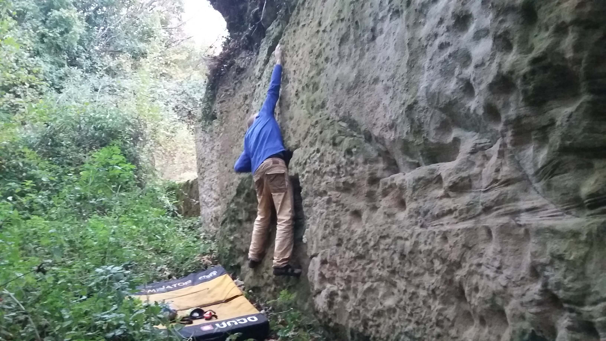
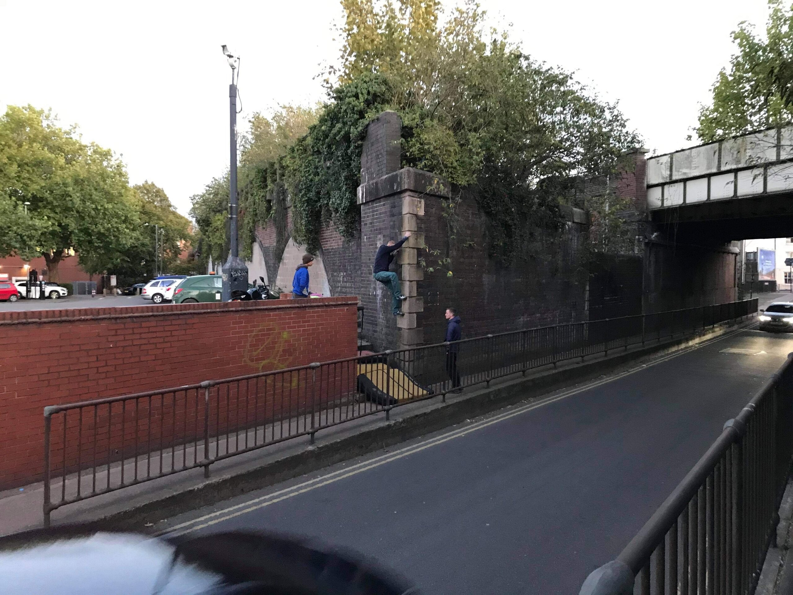

The car-less life is tough and sometimes its hard to face the heat and atmosphere of the Sport and Wellness Hub. Luckily there are plenty of options for climbing outside in the local area. None of these crags are brilliant but they always leave you with memorable experiences, experiences that only students stranded at the University of Warwick will ever have. Sometimes a trip during a tough week to somewhere local can be even more satisfying and meaningful than a conventional trip to somewhere like the Peak. It is local adventures such as these that you will laugh about with your mates in the years to come, and that make the experience of being a Warwick climber truly unique.
Below is a brief description of each location, as well as some photos and videos. A link is included to each crags UKClimbing.com crag database entry. These entries detail the climbs at these crags, how to get there and other useful information.
By Train
Hockley Flyover Underpass, Birmingham
Hockley Flyover Underpass is adorned with the brutalist concrete sculpture of artist William Mitchell. The scultpures were installed in 1968 and Mitchell intended for them to be climbed on. They have recently rediscovered and publicised by Brutiful Birmingham and Birmingham University Mountaineering Club.
How to get there: Catch the train to Birmingham New Street. Catch the metro from Priory Queensway to Vyse Street, then walk for 6 minutes to the underpass, located at 52.4954,-1.9151.
The Bournebrook Wall, Birmingham
The Bournebrook Wall is the Warwick Sport Rock Garden of University of Birmingham, only its actually good. The wall is made of sandstone blocks 5/6 metres high and some 50 metres long. It has been climbed on by The Stoats of University Birmingham Moountaineering Club for over 50 years.
How to get there: Catch the train to Birmingham New Street. From here catch the train to University. Walk for 5 minutes to the wall, located at 52.44828,-1.93099.
Robos Bridge, Marston Green
Robos Bridge supports the Coventry-Birmingham railway line as it passes over Sheldon Country Park. A couple of good 6Bs and an excellent 7A dyno with a optional hard sit start extension. Catch the train from Coventry, Canley or Tile Hill station and make sure its one thats stops at Marston Green. The bridge is a short walk from the station. The local people are very friendly and will usually stop for a chat.
How to get there: Catch the train to Marston Green. From here walk for 5 minutes to the bridge, located at 52.469,-1.7594.
By Bike
Radford Railway Viaduct 33A, Radford Semele
Viaduct 33A is a short distance east of Leamngton Spa. It has two good boulder problems on brick artes. One graded f5+ and one f6C. These are great fun and in a unique situation next to the canal.
Corley Rocks, Corley
Corley Rocks is a hilarious soft sandstone crag not far from Coventry. It has a couple of decent boulder problems, an ancient and dangerous sport climb, and a trad route. Worth a visit or two to get these things done. Please dont climb on the rock if it is wet or damp.
North Woodloes Quarry, Leek Wooton
North Woodloes Quarry is not far from Leamington and seemingly made entirely out of sand. It is only really climbable during dry spells in summer. There are some easy problems on natural features and some harder problems which have been chipped out of the rock by a naughty person. Please dont climb on the rock if it is wet or damp.

On Foot (and Bus)
Wedgnock Lane Bridge 50A, Warwick
A recently discovered bridge crack over the Grand Union Canal. First traversed by Tom Randall to give the route Bassline 5.12c (F7b-ish).
Leamington Spa
A few problems have been developed around South Leamington. Specifically on the High Street Bridge and Bath Street Viaducts. The Blue Wave sculpture outside All Saints Church / The Old Library is also a laugh. The Princes Drive Viaducts have been climbed on in the past and may provide good sport.

Campus
The University campus has a number of boulder problems ranging from good quality to utter rubbish. These are good for a laugh after an evening at the Duck or for blowing off steam if you live on campus. The best spots are listed below but there is plenty more documented on UKC.
- 3B Series I by Bernard Schottlander (aka Toil) is home to several problems and is located in Red Square next to Old Rootes. The best problems are Trouble V3/f6A, And V4/f6B and Toil V2/f5+. Best climbed with bare feet!
- The Engineering Department has a few problems based around an arte. The arte is located to the right of the steps to the entrance, below the bike racks. The roof keep these problems permanently dry!
- Petroleum Wall is the name given to the wall below the railings outside the Modern Records Centre/BP Archive. The wall using everything is a classic and dynoing from the second break to the top is worth V6/f7A!
- The Humanities Rock garden is home to the best problems on real rock. Attack Goose V1/f5 and Cristo El Redentor V0/f4+ are essential!
Coventry
The city centre has plenty of things to climb about on. Pictured here are Basilica by Paul De Menchaux (Portland Limestone) and Herbert Crack (sandstone, loose top hold). There is plenty more to be discovered.


Map